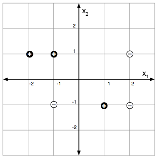
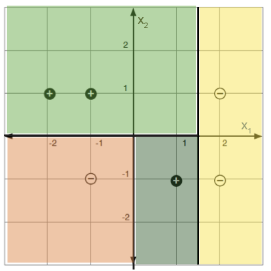

10 Non-parametric Models
Sinir ağları, farklı mimarileri deneyebilmemiz ve verilerimizde iyi çalışan birini seçmek için cross-validation’i kullanabilmemiz açısından uyarlanabilir karmaşıklığa sahiptir. Bu bölümde karmaşıklıklarını otomatik olarak’e training data’e uyarlayan modellere dönüyoruz: parametrik olmayan adı yanıltıcıdır: bu yöntemlerin parametreleri vardır, ancak parametreleştirmenin boyutu önceden sabitlenmek yerine daha fazla veri elde ettikçe büyüyebilir.
Burada ele aldığımız yöntemler basit modellerden oluşan bir bileşim biçimine sahip olma eğilimindedir:
Nearest neighbor modelleri: Bölüm 10.1 burada verileri eğitim sırasında işlemeyiz ancak tüm işi, belirli bir yeni veri noktasına en yakın eğitim örneklerini arayarak tahminler yaparken yaparız.
\(k\)-means clustering methods: Bölüm 10.2 bölümünde verileri önceden tanımlanmış labels olmadan benzerliğe göre gruplara ayırır; cluster sayısını değiştirerek karmaşıklığı uyarlarız.
Ağaç modelleri: Bölüm 10.3 burada input alanını bölümlendiriyoruz ve alanın farklı bölgelerine ilişkin farklı basit tahminler kullanıyoruz; hypothesis alanı, input alanının daha ince ve daha hassas bölümlerine izin verecek şekilde keyfi olarak genişleyebilir.
Ensemble yöntemleri: Bölüm 10.4’te çeşitli temel öğrenicileri eğittiğimiz ve çıktılarını birleştirdiğimiz; bu, estimation hatasını azaltır. Ağaçlara uygulanan bagging ve rastgele ormanlara odaklanıyoruz.
Büyük sinir ağları çağında bile bu yöntemler bilinmeye değerdir: Hızlıdırlar, az sayıda hiper parametreye sahiptirler, çoğunlukla rekabetçi performans gösterirler ve daha yorumlanabilir olabilirler (karar ağaçları doğrudan okunabilir; en yakın komşular bir tahminin arkasındaki eğitim örneklerine işaret edebilir).
10.1 Nearest Neighbor
En yakın komşu modellerinde, eğitim sırasında veri üzerinde herhangi bir işlem yapmayız; sadece hatırlarız! Tüm işler tahmin zamanında yapılır.
Input değerleri \(x\), herhangi bir \(\mathcal X\) etki alanından (\(\mathbb{R}^d\), belgeler, ağaç yapılı nesneler vb.) olabilir. Sadece bir mesafe ölçüsüne ihtiyacımız var, \(d: \mathcal X \times \mathcal X \rightarrow \mathbb{R}^+\), which satisfies the following, for all \(x, x', x'' \in \mathcal X\): \[\begin{aligned} d(x, x) & = 0 \\ d(x, x') & = d(x', x) \\ d(x, x'') & \leq d(x, x') + d(x', x'') \end{aligned}\]
Bir \(\mathcal{D}= \{(x^{(i)},y^{(i)})\}_{i=1}^n\) veri kümesi göz önüne alındığında, yeni bir query \(x \in \mathcal X\) için tahminimiz, bağların rastgele kırıldığı \[h(x) = y^{(i^*)} \quad \text{where} \quad i^* = \arg\min_i d(x, x^{(i)}),\]’tir.
Aynı algorithm, regression * ve* classification için de çalışır!
Geometrik olarak bu, input alanını bir Voronoi diyagramı’e böler: eğitim noktası başına bir bölge; her bölgedeki tahmin o noktanın \(y\) value’idir.
{kind=link}
Bu yöntemin birkaç yararlı çeşidi vardır. \(k\)-nearest neighbors yönteminde query point \(x\)’e en yakın \(k\) training point’i bulur; classification için çoğunluktaki \(y\) value’yi, regression içinse ortalamayı output olarak veririz. Ayrıca locally weighted regression uygulanabilir: local linear regression modellerini en yakın \(k\) noktaya uydurur, daha uzaktaki noktalara daha düşük weight verebiliriz. Büyük veri kümelerinde nearest-neighbor aramalarını her seferinde tüm noktalara bakmadan verimli gerçekleştirmek için uygun data structures (ör. ball trees) kullanmak önemlidir.
10.2 \(k\)-means Clustering
Clustering, önceden atanmış etiketler olmadan bir veri kümesindeki anlamlı gruplamaların otomatik olarak keşfedilmesi sorunudur. Bir doktor, hastalarının farklı tedavilere farklı tepkiler veren gruplar halinde geldiğini fark edebilir; Bir biyolog, dış görünüşlerine rağmen yarasaların ve balinaların her ikisinin de aynı kategoriye (“memeli”) ait olduğunu tespit edebilir. Bu tür gruplamalar bir kez bulunduğunda, verileri yorumlamak ve grup başına kararlar almak için kullanılabilirler.
10.2.1 Clustering formalizmleri
Matematiksel olarak clustering, classification’e benzer (kategorilerin önceden tanımlı olmaması dışında \(x\) veri noktalarından \(y\) kategorilerine bir eşleme istiyoruz). Bunun yerine, verilerin input alanında distributed nasıl dağıtıldığından keşfedilen, etiketlenmemiş bir \(\{x^{(i)}\}_{i=1}^n\) veri kümesinin bölümleri’tir. Bu, clustering’i bir unsupervised öğrenme sorunu haline getirir.
Sezgisel olarak bir “cluster”, hepsi birbirine yakın ve diğer kümelerden uzakta olan bir veri noktası grubudur. Aşağıdaki dağılım grafiğini ele alalım. Sizce kaç tane küme var?
{kind=link}
Yaklaşık beş veri noktası kümesi var gibi görünüyor ve bu kümeler, kümeler olarak adlandırmak istediğimiz şeylerdir. Her kümedeki tüm veri noktalarını bu kümeye karşılık gelen bir cluster’e atarsak, o zaman yakındaki veri noktalarının aynı cluster’e atanmasını, birbirinden uzaktaki veri noktalarının ise farklı kümelere atanmasını isteyebiliriz.
clustering algoritmalarını tasarlarken karar vermemiz gereken üç kritik şey şunlardır:
Veri noktaları arasındaki mesafe’i nasıl ölçeriz? Neler “yakın” ve “uzak” olarak sayılır?
Kaç tane küme aramalıyız?
clustering’in ne kadar iyi olduğunu nasıl değerlendireceğiz?
Bir sonraki bölümde somut bir clustering algorithm üzerinde çalışırken bu kararları almaya nasıl başlayacağımızı göreceğiz.
10.2.2 Loss ve algorithm
k-means, en basit clustering algoritmalarından biridir. cluster variance içindeki toplamı en aza indirmek için cluster atamalarını \(y^{(i)} \in \{1, \ldots, k\}\) seçer:
\[\sum_{j=1}^k \sum_{i=1}^n \mathbb{1}(y^{(i)} = j) \lVert x^{(i)} - \mu^{(j)} \rVert^2, \tag{10.1}\]
burada \(\mu^{(j)} = \frac{1}{N_j} \sum_{i=1}^n \mathbb{1}(y^{(i)} = j) x^{(i)}\), cluster \(j\)’in ortalamasıdır, \(N_j = \sum_i \mathbb{1}(y^{(i)} = j)\) boyutudur ve \(\mathbb{1}(\cdot)\) gösterge işlevidir. Her iç toplam, cluster variance içindeki bir cluster’tir; dış toplam, tüm \(k\) kümelerindeki bunları toplar.
K-means algorithm, iki adımı değiştirerek bu kaybı en aza indirir: (1) her veri noktasını en yakın ortalamaya sahip cluster’e yeniden atayın ve (2) her cluster ortalamasını, şimdi kendisine atanan noktalardan yeniden hesaplayın. Her iki adımda da kayıp artmıyor, dolayısıyla algorithm yakınsıyor. Şekil 10.2 oyuncak veri kümemizdeki ilk üç yinelemeyi gösterir; Şekil 10.3, dört yinelemenin ardından yakınsayan sonucu gösterir.
{kind=link}
{kind=link}
Tüm ayrıntılarıyla:
10.2.2.1 K-means hedefini en aza indirmek için gradient descent kullanma
gradient descent’i de kullanabiliriz. Hedefi, anında her nokta için en uygun atamayı seçerek tek başına \(\mu\)’in türevlenebilir bir fonksiyonu olarak yeniden yazın: \[L(\mu) = \sum_{i=1}^n \min_j \lVert x^{(i)} - \mu^{(j)} \rVert^2.\] \(L(\mu)\) üzerinde gradient descent’i çalıştırın, ardından optimize edilmiş \(\mu\)’ten cluster atamalarını okuyun: \[y^{(i)} = \arg\min_j \lVert x^{(i)} - \mu^{(j)} \rVert^2.\] Bu, tıpkı alternatif algorithm gibi, Eşitlik 10.1’in local minimum’ine yakınsar; \(L\), convex olmadığı için global minimum’i bulmanın garantisi yoktur.
10.2.3 Pratik hususlar
10.2.3.1 Başlatmanın önemi
Her iki değişken de yalnızca bir local minimum’e yakınsar, dolayısıyla sonuç, cluster araçlarının başlatılmasına bağlıdır. Şekil 10.4, oyuncak verilerimizde daha kötü bir clustering’e yol açan farklı bir başlatma gösteriyor:
{kind=link}
İyi başlatmaları seçmek için çeşitli yöntemler geliştirilmiştir (örneğin bkz. k-means++ algorithm). Basit bir seçenek, standart k-means algorithm’i farklı rastgele başlangıç koşullarıyla birden çok kez çalıştırmak ve ardından bunlardan en düşük k-ortalama kaybına ulaşan clustering’i seçmektir.
10.2.3.2 k’nin önemi
\(k\) kümelerinin sayısı, seçmemiz gereken bir hyperparameter’tir (bazı gelişmiş algoritmalar bunu otomatik olarak çıkarımlayabilir, ancak k-means bunlardan biri değildir).
{kind=link}
Şekil 10.5 efektin bir örneğini gösterir. Hangi sonuç daha doğru görünüyor? Söylemesi zor olabilir! Daha yüksek k kullanarak daha fazla küme elde ederiz ve daha fazla kümeyle cluster variance dahilinde daha düşük değerlere ulaşabiliriz - k-ortalama hedefi hiçbir zaman artmaz ve k’yi artırdıkça tipik olarak kesinlikle azalır. Sonunda k’yi toplam veri noktası sayısına eşit olacak şekilde artırabiliriz, böylece her veri noktası kendi cluster’ine atanır. O zaman k-means hedefi sıfırdır, ancak clustering hiçbir şey göstermez. Açıkça görülüyor ki, k için en iyi value’i seçmek için k-means hedefinin kendisini kullanamayız. Bölüm 10.2.4’te, clustering’in k-ortalama hedefini en aza indirme yeteneğinin ötesinde başarısını değerlendirmenin bazı yollarını tartışacağız ve k’nin uygun bir value’ine karar vermemiz bu tür yöntemlerle mümkün olacaktır.
Hiyerarşik clustering, taksonomileri (ör. türler, aileler, krallıklar) keşfetmek için yararlı olan birden fazla ayrıntı düzeyinde (kök yakınında kaba, yapraklar yakınında ince) kümelenmelerden oluşan bir ağaç üreterek tek bir \(k\) seçmenin yan adımlarını atar. Diğer birçok clustering algoritması için SKLEARN’in cluster modülüne bakın.
10.2.3.3 k-feature alanında anlamına gelir
Clustering algoritmaları verileri benzerlik kavramına dayalı olarak gruplandırır ve bu nedenle veri noktaları arasında bir mesafe ölçüsü tanımlamamız gerekir. Bu kavram aynı zamanda en yakın komşu yöntemlerinin (Bölüm 10.1) de merkezinde yer alıyordu ve mesafe ölçümü seçimimiz, bulacağımız sonuçlar üzerinde büyük bir etkiye sahip olabilir.
K-means algorithm’imiz, bu mesafenin karesi olan bir loss function ile Öklid mesafesini, yani \(\lVert x^{(i)} - \mu^{(j)} \rVert\)’i kullanır. Farklı mesafe ölçümlerini kullanmak için k-araçlarını değiştirebiliriz, ancak daha yaygın bir yöntem, Öklid mesafesine bağlı kalmak, ancak bir feature space’te ölçülmektir. Tıpkı regression ve classification problemlerinde yaptığımız gibi, verilerden daha güzel bir feature representation, \(\phi(x)\)’e bir feature map tanımlayabilir ve ardından feature alanındaki verilere cluster’e k-means uygulayabiliriz.
Basit bir örnek olarak, birinci boyutta çok genişleyen ve ikinci boyutta daha az dinamik aralığa sahip iki boyutlu veriye sahip olduğumuzu varsayalım. Daha sonra clustering’ten önce boyutları her biri benzer dinamik aralığa sahip olacak şekilde ölçeklendirmek isteyebiliriz. Bölüm 5’te yaptığımız gibi standardizasyonu kullanabiliriz.
Görüntüler, müzik, kimyasal bileşikler vb. gibi daha karmaşık verileri cluster’e dönüştürmek istiyorsak genellikle daha karmaşık feature temsillerine ihtiyacımız olacaktır. Bu günlerde yaygın bir uygulama, neural network ile öğrenilen feature temsillerini kullanmaktır. Örneğin, görüntüleri feature vektörlerine sıkıştırmak için bir autoencoder’i, ardından bu feature vektörlerine cluster’i kullanabiliriz.
10.2.4 clustering algoritmaları nasıl değerlendirilir?
clustering ve genel olarak denetlenmeyen yöntemler için değerlendirme zordur çünkü tahmin edilecek hedef değerler yoktur. K-ortalama kaybı tek başına yeterli değildir: Bölüm 10.2.3.2’te olduğu gibi, \(k\)’i çok büyük almak, herhangi bir öngörü elde etmeden kaybı sıfıra indirir. Birkaç pratik alternatif:
- Tutarlılık alt örnekler veya hyperparameter seçimleri arasında (ör. rastgele başlatmalar). Önyüklemeli çalıştırmalar çok farklı kümeler üretiyorsa sonuç kırılgandır.
- Temel doğruluk: Birkaç noktanın birbirine ait olduğu biliniyorsa, bunların keşfedilen aynı cluster’te bulunup bulunmadığını kontrol edin.
- Downstream task başarısı: kümeler aşağı akışlı bir model’e beslenirse (örneğin, Şekil 10.6’te olduğu gibi cluster başına bir regression sığdırılırsa), bu konudaki başarıyı ölçün downstream task.
Clustering aynı zamanda görselleştirme ve yorumlanabilirlik için de sıklıkla kullanılır; burada insan muhakemesi algorithm seçimini yönlendirir ve sonucu doğrular.
{kind=link}
10.3 Ağaç Modelleri
Uzaktan bölünmelere. En yakın komşuların ve k-ortalamalarının input alanını bölgelere ayırmak için mesafeyi kullandığı yerde, trees farklı bir yol izler: input alanını eksen hizalı bölmelerle bölerler; mesafe ölçümüne gerek yok. Bölme, alanı yinelemeli olarak bölen (tipik olarak ikili) bir ağaç tarafından tanımlanır; daha sonra her leaf’e çok basit bir tahminci yerleştiriyoruz.
Ağaç yöntemleri, split ailesi (genellikle eksen hizalı), yapraklarda kullanılan tahminler (genellikle sabitler), karmaşıklığı nasıl kontrol ettikleri ve algorithm uyumu açısından farklılık gösterir.
key’in ağaçların bir avantajı yorumlanabilirliktir: Bir insan, bir ağacın verdiği kararları takip edebilir. Bu, uzmanların algoritmik tavsiyelere güvenmesi gereken tıp gibi alanlarda önemlidir. Ağaçlar, özellikler tek tek veya küçük gruplar halinde (örneğin bir hastanın klinik ölçümleri) yararlı bilgiler taşıdığında en iyi şekilde çalışır; ham görüntüler gibi yüksek boyutlu girdiler için daha az uygundurlar.
Aşağıda örnek bir ağaç verilmiştir (Breiman, Friedman, Olshen, Stone’dan (1984) alınmıştır):
{kind=link}
Biz CART ve ID3’e odaklanacağız: açgözlülükle axis-aligned bölmeleri ve her birinde bir constant model ile bir bölüm oluşturuyorlar leaf. İlginç sorular, bölünmelerin nasıl seçileceği ve karmaşıklığın nasıl kontrol edileceğidir; regression ve classification sürümleri birbirine çok benzer.
CART (“classification ve regression ağaçları”) ve ID3 (“yinelemeli dikotomizer 3”) istatistiklerde ve AI topluluklarında bağımsız olarak icat edildi.
Somut bir örnek için: 2 boyutlu feature alanındaki etiketli noktalar (solda) ve bunları mükemmel şekilde sınıflandıran bir karar ağacı bölümü (sağda).


10.3.1 Regression
Tahminci şunlardan oluşur:
a bölme işlevi, \(\pi\), input alanının öğelerini tam olarak \(M\) bölgelerinden birine, \(R_1, \ldots, R_M\)’e eşler ve
a \(M\) output değerleri koleksiyonu, \(O_m\), her bölge için bir tane.
\(I = \{1, \ldots, n\}\)’in training set’i indekslemesine ve \(I_m = \{i \in I \mid x^{(i)} \in R_m\}\)’in \(R_m\) bölgesindeki indeksleri toplamasına izin verin. Bir bölüm göz önüne alındığında, output sabiti için doğal seçim bölge başına ortalamadır: \[O_m = \text{average}_{i \in I_m}\, y^{(i)}.\] Bölge başına doğal hata, hataların karelerinin toplamıdır: \[E_m = \sum_{i \in I_m}(y^{(i)} - O_m)^2.\] İdeal olarak küçültülecek bölümü seçerdik \[\lambda M + \sum_{m=1}^M E_m,\] \(\lambda\)’in çok fazla bölgeye sahip olmasına karşı düzenleme yaptığı yer.
training data’in (input alanının tamamı değil) bölümleri üzerinde arama yapmak yeterlidir, ancak bu sorun bile NP-tamamlanmıştır; dolayısıyla aşağıdaki açgözlü yaklaşım.
10.3.1.1 Ağaç inşa etmek
Bu yüzden açgözlü olacağız: bazı kriterlere göre en iyi tekli split’i seçin, sonra tekrar edin. Şimdilik iki çocuktaki toplam hataların karelerinin toplamını en aza indiren split’i seçiyoruz; Diğer kriterleri daha sonra ele alacağız.
Aşağıdaki sözde kodda, BuildTree, eğitim endekslerinin bir \(I\) alt kümesi üzerinde çalışır (böylece özyinelemeli çağrılar her split’in alt öğeleri üzerinde çalışır). \(j\) ve value \(s\) boyutunda bir split adayı için, iki çocuk için \(I^+_{j,s}\) ve \(I^-_{j,s}\) ve ortalama \(y\) değerleri için \(\hat{y}^\pm_{j,s}\) yazıyoruz. hyperparameter \(k\), izin verebileceğimiz en büyük leaf boyutudur.
Uygulamada, BuildTree’i başlangıçta \(I = \{1,\ldots,n\}\) (training set’in tamamı) ile çağırırız ve gerisini yineleme halleder.
Her çağrı \(O(dn)\) bölünmelerini dikkate alır: \(d\) feature boyutları, boyut başına \(O(n)\) adayı split noktaları (yalnızca ardışık sıralanmış veri noktaları arasındaki boşluklar önemlidir; diğer herhangi bir split aynı training error’i verir).
10.3.2 Classification
pruning classification ağaçlarını oluşturma stratejisi, regression’inkine çok benzer. Aynı bölümleme makinesini yeniden kullanıyoruz: \(I_m\) dizin kümeleriyle \(R_m\) bölgeleri, \(O_m\) bölge tahmincisi ve \(E_m\) bölge hatası. Yalnızca \(O_m\) ve \(E_m\) tanımları değişir.
Doğal bölge tahmincisi, \(R_m\)’teki eğitim noktaları arasında çoğunlukla class’tir: \[O_m = \text{majority}_{i \in I_m}\, y^{(i)},\] ve doğal bölge hatası, yanlış sınıflandırılmış noktaların sayısıdır: \[E_m = \bigl|\{i \in I_m \mid y^{(i)} \neq O_m\}\bigr|.\] Ayrıca \(m\) bölgesindeki empirical class olasılığı değerine de ihtiyacımız olacak: \[\hat{P}_{m,k} = \frac{\bigl|\{i \in I_m \mid y^{(i)} = k\}\bigr|}{N_m}, \qquad N_m = |I_m|.\] Bölmeler için, \(\hat{P}_{m,j,s}\), \(m\) bölgesindeki split \((j, s)\)’in bir dalına ve \(1 - \hat{P}_{m,j,s}\) diğer dalına düşen noktaların kesirini belirtir.
10.3.2.1 Bölme kriterleri
Açgözlü algorithm’in bir sonraki adımda hangi split’i yapacağına karar vermesi için bir yola ihtiyacı var; bir alt düğümün “safsızlığını” ölçüyoruz ve safsızlığı en fazla azaltan split’i seçiyoruz. entropy kullanıyoruz: \[Q_m(T) = H(I_m) = -\sum_k \hat{P}_{m,k}\log_2 \hat{P}_{m,k},\] \(0\log_2 0 = 0\) kuralına göre \(H\), \(\hat{P} = 0\) olduğunda iyi tanımlanmıştır.
Diğer iki yaygın seçenek yanlış sınıflandırma hatası \(1 - \hat{P}_{m,O_m}\) ve Gini index \(\sum_k \hat{P}_{m,k}(1 - \hat{P}_{m,k})\)’tir. Üçü de saf bölgelerde (\(\hat{P}_{m,0} \in \{0, 1\}\)) kaybolur ve aşağıdaki safsızlık eğrilerinin gösterdiği gibi (\(p = \hat{P}_{m,0}\) ile) \(\hat{P}_{m,0} = 0.5\) yakınında zirve yapar. Gelenek, ağacı büyütürken entropy’i kullanır ve pruning olduğunda yanlış sınıflandırma hatasını kullanır.
{kind=link}
regression’e benzer şekilde (\(E_{j,s}\) karesel hataların toplamını en aza indiren split’i seçtik), burada iki çocuğun ağırlıklı ortalama entropy’ini en aza indiren split’i seçiyoruz: \[\hat{H} = \frac{|I^-_{j,s}|}{N_m}\, H(I^-_{j,s}) + \frac{|I^+_{j,s}|}{N_m}\, H(I^+_{j,s}).\] Bu, \(x_j = s\) testinin information gain değerini maksimuma çıkarmaya eşdeğerdir: \[\text{infoGain}(x_j = s, I_m) = H(I_m) - \hat{H}.\]
10.3.3 Pruning
Pruning, hem regression hem de classification ağaçları için geçerlidir: her iki durumda da, saf erken durdurma kriterleri, yalnızca bir sonraki split sonrasında değerli olan bölünmeleri gözden kaçırabilir, bu nedenle büyük bir ağaç yetiştirir ve onu tekrar budayız.
Bir ağacın maliyet karmaşıklığını \(T\) (yaprakların \(m\) tarafından indekslendiği) olarak tanımlarız: \[C_\alpha(T) = \sum_{m=1}^{|T|} E_m(T) + \alpha |T|,\] burada \(|T|\) yaprak sayısıdır ve \(E_m\) görevle eşleşen bölge başına hatadır (regression için karesel hataların toplamı, classification için yanlış sınıflandırma sayısı). Sabit bir \(\alpha\) için “en zayıf halka” pruning, \(C_\alpha(T)\)’i yaklaşık olarak en aza indirir:
Köke ulaşılıncaya kadar genel hatadaki artışı en aza indiren alt düzey split’i art arda kaldırarak bir ağaç dizisi oluşturun.
Return \(C_\alpha\)’i en aza indiren bu dizideki ağaç.
cross-validation ile \(\alpha\)’i seçiyoruz.
10.3.4 Ağaç çeşitleri ve değiş tokuşlar
Ağaç temasında birçok varyasyon var. Bunlardan biri, her leaf’te farklı regression veya classification yöntemlerinin kullanılmasıdır. Örneğin, sabit bir value kullanmak yerine her leaf’teki örnekleri model yapmak için bir linear regression kullanılabilir.
Göz önünde bulundurduğumuz nispeten basit ağaçlarda, bölünmeler aynı anda yalnızca tek bir feature’e dayalıdır ve sonuçta ortaya çıkan bölünmeler eksene paraleldir. Çoklu özelliklerin ve bunlara dayalı doğrusal sınıflandırıcıların dikkate alınması dahil, potansiyel olarak eksene paralel olmayan bölünmelerle sonuçlanan başka bölme yöntemleri de mümkündür. En iyi değişken kombinasyonunu (tek bir split değişkeni yerine) seçmek için birçok olası özellik kombinasyonunun dikkate alınması gerekebileceğinden, bu tür durumlarda karmaşıklık bir endişe kaynağıdır.
Başka bir generalization, hiyerarşik uzman karışımıdır; burada bölünmelerin olasılıksal olduğu (yani her noktanın her leaf’te bir üyelik derecesine sahip olduğu) ağaçların “yumuşak” bir versiyonunu yapıyoruz. Bu tür ağaçlar bir gradient descent formu kullanılarak eğitilebilir. bagging, güçlendirme ve karışım ağacı yaklaşımlarının (örneğin, gradient güçlendirilmiş ağaçlar) ve uygulamalarının kombinasyonları hazır olarak mevcuttur (örneğin, XGBoost).
Ağaçlar değerli bir araç olmaya devam ediyor: yorumlanabilirler, eğitilmeleri hızlıdır, çoklu class hedeflerini ve çeşitli kayıp işlevlerini doğal bir şekilde ele alırlar ve feature’in önemini ortaya çıkarırlar. Ayrıca pratikte şaşırtıcı derecede iyi performans gösteriyorlar; Rastgele ormanlar ve güçlendirilmiş ağaçlar genellikle daha karmaşık modellerin değerlendirilmesinde temel olarak kullanılır.
10.4 Ensemble yöntemleri
Tek bir ağaçta yüksek estimation hatası bulunabilir: verilerdeki küçük değişiklikler çok farklı ağaçlar üretebilir. Ensemble yöntemleri, birçok tahminciyi eğiterek ve çıktılarını birleştirerek bu sorunla mücadele eder. Burada ele aldığımız teknikler, bagging ve rastgele ormanlar, herhangi bir temel öğrenci için geçerli olan çerçeve düzeyinde fikirlerdir, ancak bunlar çoğunlukla ağaçlarla eşleştirilir; çünkü hem ağaçlar yüksek variance’tir (yani ortalama alma yardımcı olur) hem de ağaç eğitim ucuzdur.
10.4.1 Bagging
Bootstrap toplama (bagging), uyarlamalı tahminciyi farklı bootstrap veri örnekleri üzerinde eğiterek ve sonuçların ortalamasını alarak estimation hatasını azaltır.
Construct \(B\) \(n\) boyutunda yeni veri kümeleri. Her veri seti, \(n\) veri noktalarının örneklenmesi ve \(\mathcal{D}\)’in değiştirilmesiyle oluşturulur. Tek bir veri kümesine \(\mathcal{D}\)’in bootstrap örneği adı verilir.
Her bootstrap örneğinde bir \(\hat{f}^b(x)\) tahmincisini eğitin. Temel öğrenen bir ağaç olduğunda, her düğümde split’in nasıl yapılacağına karar verirken all özelliklerini dikkate alan standart ağaç oluşturma algorithm kullanılır.
Regression kasası: torbalı tahminci \[\hat{f}_{\text{bag}}(x) = \frac{1}{B} \sum_{b=1}^B \hat{f}^b(x) \; .\]’tir
Classification vaka (\(K\) sınıflarıyla): her ağacın oylarını bir one-hot vector \(\hat{f}^b(x) \in \{0,1\}^K\) olarak temsil edin ve her birini tahmin eden oranı elde etmek için ortalamayı alın class: \[\hat{f}_{\text{bag}}(x) = \frac{1}{B} \sum_{b=1}^B \hat{f}^b(x).\] Torbalı tahmin çoğunluk oyudur: \(\hat{y}_{\text{bag}}(x) = \arg\max_k \hat{f}_{\text{bag}}(x)_k\).
Bagging’in bir maliyeti vardır: model tabanının herhangi bir basit yorumlanabilirliği kaybolur.
10.4.2 Rastgele Ormanlar
Rastgele ormanlar, bagging’i ekstra bir rastgelelik kaynağıyla genişletir: her split düğümünde, en iyi split’i bulmak için tüm \(d\) özelliklerini dikkate almak yerine, algorithm, \(m\) özelliklerini rastgele seçer (\(m \leq d\), bir hyperparameter) ve bunlar arasından en iyi split’i seçer. Bu rastgele feature seçimi ağaçların korelasyonunu daha da bozarak oylamadan elde edilen kazancı keskinleştirir. Uygulamada, rastgele ormanlar çoğu zaman çok daha gelişmiş yöntemlere karşı bile son derece iyi performans gösterir.
Aşağıda \(B\), \(m\) ve \(n\), algorithm’in hiperparametreleridir.
10.5 Özet
Bu bölümdeki yöntemlerin hepsinin ortak bir özelliği var: Karmaşıklıkları, önceden seçilen bir mimari tarafından sabitlenmek yerine, verilerle birlikte artıyor. En yakın komşular, tüm işi query zamanına ertelemek için bir mesafe ölçümü kullanır. k-means, etiketlenmemiş verilerdeki kümeleri keşfetmek için aynı mesafe makinesini uygular. Trees, input alanını mesafeye ihtiyaç duymadan eksen hizalı bölmelerle bölümlendirerek farklı bir yol izler. Ensembles (bagging ve rastgele ormanlar), variance’i devirecek ortalama sayıda ağacın ortalamasıdır. Bunların hiçbiri sinir ağlarının yaptığı türden bir mimari araştırmayı gerektirmez, ancak yine de hepsi ilk önce ulaşmaya değer rekabetçi temellerdir.